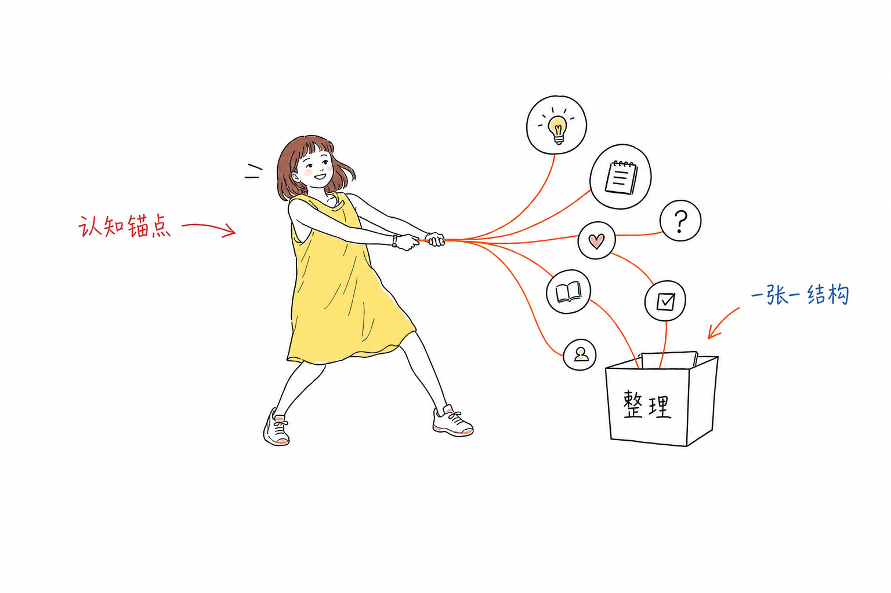

放映
一页一个标题。听众跟着你的遥控器走。走完，他们记得封面，不记得自己下一步点哪里。
这不是一页一页往后翻的课件。这是一条学习路径：一站一个认知动作，走完要能做事。
一页一个标题。听众跟着你的遥控器走。走完，他们记得封面，不记得自己下一步点哪里。
一站一件事。人可以自己滚，也可以被你一步一步揭开。中间随时能点开工具，离开页面也能继续做。
精确的字写在 HTML 里。图只负责这一个动作，贴在句子旁边，不要铺成一张海报。

「今天我们讲三个原则：以学生为中心、数据驱动、因材施教。」
复制本文件。改各站。认知转折处写 YoYo 插槽。链接随时插。不要把它改回翻页课件。